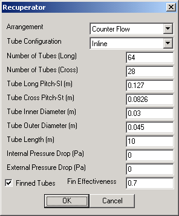

|  | This user interface prompts the user for geometrical properties of the recuperator unit. These data fields are necessary in order to compute the transfer heat rate effectiveness of the unit. The Internal Pressure Drop and External Pressure Drop fields allow the user to specify desired pressure drops for the two gas streams. The Internal field corresponds to the change in pressure for the gas stream that is heated by the recuperator whereas the External field corresponds with the change in pressure of the hot gas stream as it flows through the recuperator. The user can also toggle whether the unit uses Finned Tubes and (when toggled) the Fin Effectiveness of those tubes. |